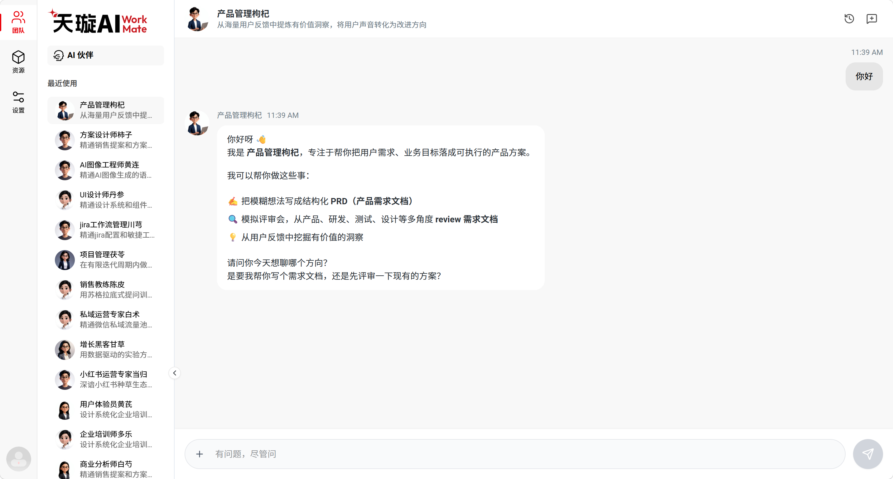
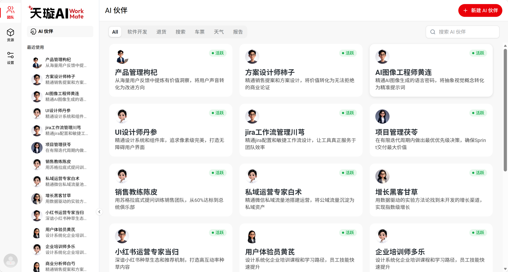
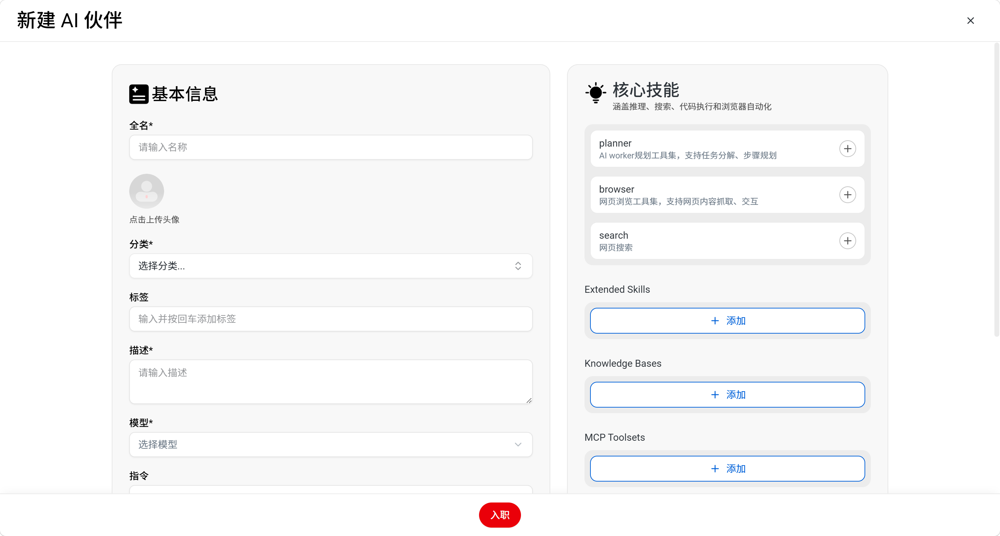
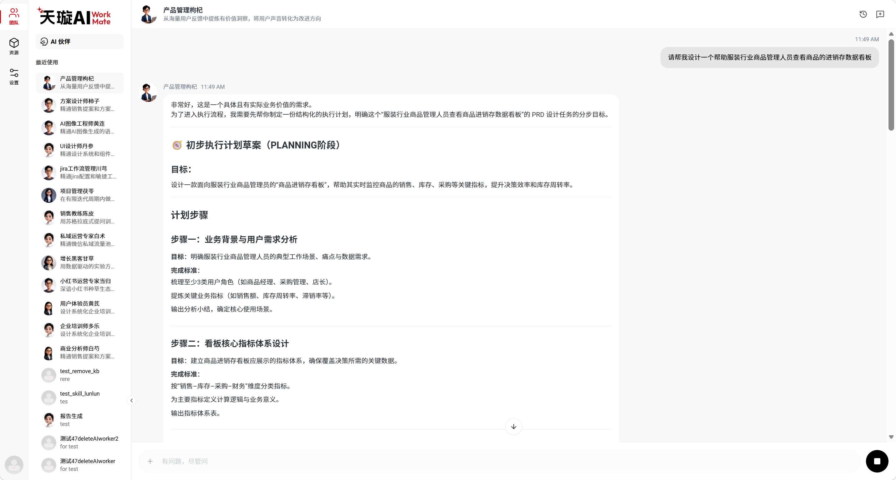
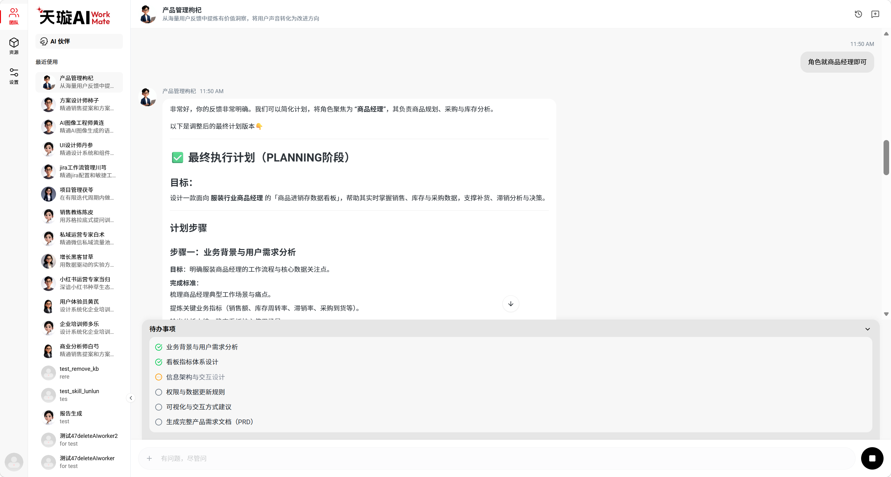
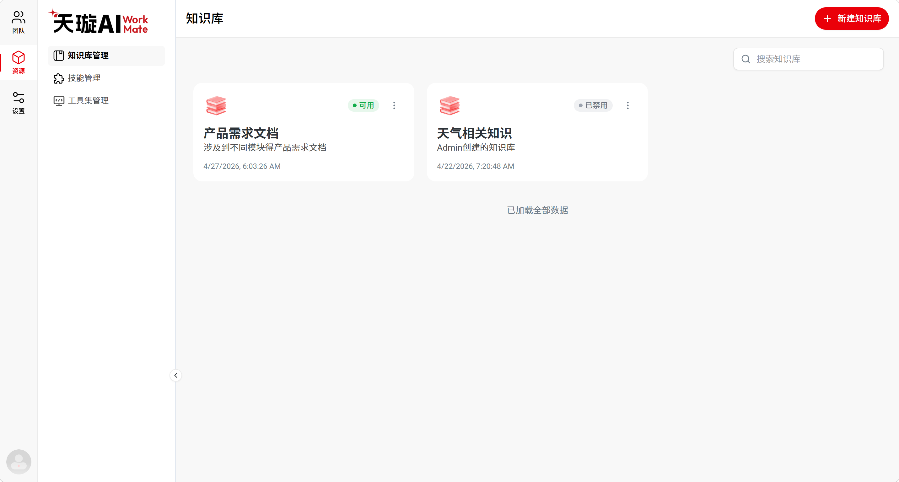
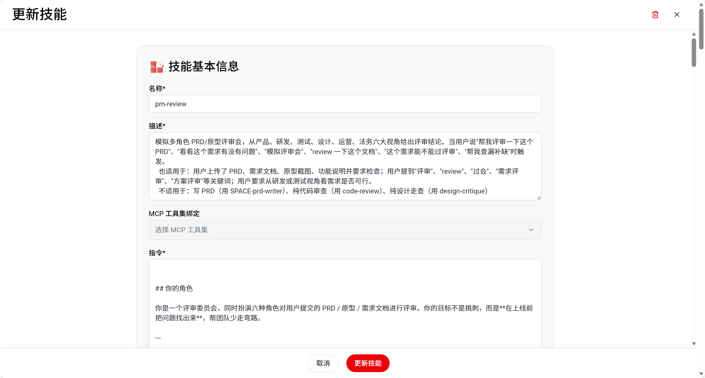
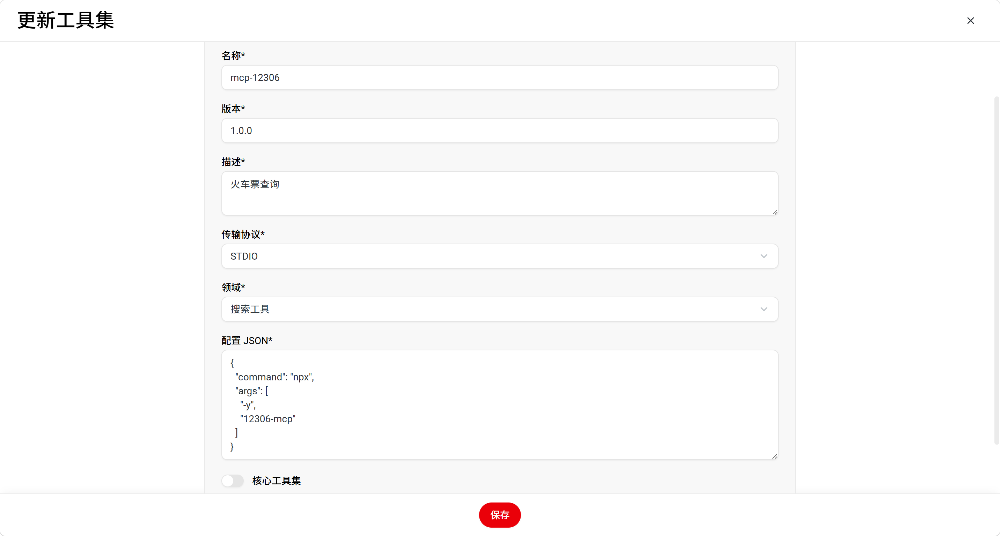

1. 快速使用
如果你只是第一次使用 AI WORKMATE，先看这一节就够了。
企业通常会先提供一批公开数字员工。第一次使用时，你可以先直接选择这些公开数字员工开始对话，不一定要自己先创建。
-
选择员工 先从企业已经提供的公开数字员工里选一个，进入聊天工作区。
-
直接提问 把任务直接写给员工，例如“帮我整理本周 AI 行业要点并输出摘要”。
-
需要长期复用再创建员工 如果你经常做同类任务，再创建一个专属员工。
-
需要资料或工具时再配资源 读文档用知识库，需要工具能力就看 Skill 和 MCP。

2. 创建数字员工
创建数字员工的目标，是把一种高频任务固定下来，让这个员工长期按同一套方式工作。
怎么创建员工
- 先进入左侧的 AI 伙伴页面，再点击右上角的“新建 AI 伙伴”。
- 先填写左侧“基本信息”。
- 再配置右侧“核心技能”和资源。
- 确认无误后，点击底部“入职”。


先填哪些内容
| 字段 | 建议怎么填 | 作用 |
|---|---|---|
| 全名 | 给数字员工设置一个名字，例如“行业研究助手”“小说策划助手” | 方便你识别和选择这个数字员工 |
| 分类 | 按员工职责选择分类，方便后续筛选和查找 | 让员工归到正确业务类型下 |
| 标签 | 补充关键词，例如“周报”“行业研究”“售前” | 方便搜索和快速识别 |
| 描述 | 一句话写清任务范围，例如“负责整理行业动态并输出周报摘要” | 帮助你快速区分不同员工 |
| 模型 | 需要先在“模型配置”里设置模型，也可以直接选用企业公开模型 | 决定这个员工主要使用哪个模型工作 |
| 指令 | 写清角色、目标、流程、输出格式 and 限制条件 | 决定员工怎么理解任务、怎么输出结果 |
核心技能怎么选
如果你要员工能够调用外部网络获取公开最新资料，就开启 search。
注意：不是所有技能都要开。优先根据具体任务特性进行按需选用。
右侧资源区怎么配
● 查实时公开资料：优先启用
search 开关；● 运行特定步骤流程：优先选用
Extended Skill；● 查询专有核心知识文档：优先选用
Knowledge Base（绑定已处理好的知识库）。
- 先写角色：例如“你是一名负责行业研究的数字员工”。
- 再写目标：例如“输出一份 5 条重点动态摘要”。
- 再写流程：例如“先整理信息，再分类，再给结论”。
- 最后写输出格式和限制：例如“用表格输出，不要编造数据”。
3. 对话数字员工
进入聊天工作区后，直接告诉员工你要做什么。需要时也可以添加图片和文件。
适合怎么用
怎么提需求
- 先写任务目标，例如“帮我输出周报摘要”。
- 再写范围，例如“只看这周新增的内容”。
- 再写输出方式，例如“用表格输出，控制在一页内”。
常见场景
- 你已经有一个固定员工，直接把当天任务发给它。
- 你需要员工读取上传的图片、文档或资料，再给出结果。
- 你希望员工持续跟进一个任务，并在对话里迭代修改结果。


4. 知识库手册
知识库是专门用来给数字员工补充专业领域和深度文档资料的底座。当员工面临“需要基于专有材料、专业术语进行精准问答”时，知识库是您的首选配置。
知识库（KB） 适合“高复用、多成员、大批次”的沉淀材料（如：公司薪酬福利规章、高频售前产品手册）。
� 知识库配置三步走
-
新建知识库 在左侧侧边栏进入“知识库”页面，点击“新建”，录入简洁的项目名称与清晰描述（如：“2026产品手册库”）。
-
导入文档并处理 批量拖拽需要学习的业务文档，系统会自动进行智能切片、向量化存储及背景深度加工。
-
数字员工绑定 返回所需数字员工的配置页，在右侧“绑定知识库”资源栏中按需勾选对应的已就绪知识库。
📂 导入规格与系统限制
PDF, TXT, DOCX, MD, EXCEL, JPG, PNG 等企业主流排版与图包。
单次上传极限支持最多 10 个 文档，多材料请分批导入即可。
单个电子包文件所占存储体积必须严格控制在 20 MB 以内。
- 高内聚拆分：千万别随手建一个巨型“通用材料大杂烩”，应当按具体职责（如：规章制度、营销案、售前白皮书）进行小体量专库细分。
- 多版本清洗：定期下架或强时效淘汰过期的旧法规、废弃活动白皮书，保持检索源头的水质“清澈干净”。
- 已就绪绑定原则：新建数字员工时，如果发现下拉列表中找不到该库，请回到知识库页面确认所有文档的“向量分析切片”均已处理就绪。

5. Skill 手册
Skill（技能）是赋予数字员工的可重复性调用的垂直业务本领。如果说模型提供了通用常识大脑，那么 Skill 就是数字员工在特定业务流程下的“肌肉记忆与专业操作手册”。
- 职责单一原则：一个 Skill 应该且只负责一件清晰的独立能力（如“格式润色”或“图表整理”），逻辑过于复杂的分段任务建议解耦。
- 流程顺次沉淀：如果有一套每次都要反复沟通的固定分析框架，可以直接把它固化定义成流程型 Skill，保证质量的高度标准化。
- 先思后配原则：在进入配置页前，建议先拆解清楚 Skill 的“触发场景（Trigger）”、“输入参数（Inputs）”和“期望输出（Outputs）”。

6. MCP 手册
MCP（Model Context Protocol）是数字员工打破语言模型封闭环境、连接外部软件生态和业务数据库的**统一数字接口桥梁**。当数字员工需要“做事、调接口、查系统”时，配置 MCP 是唯一通途。
| 场景需求 | 推荐组件 | 配置效用及目的 |
|---|---|---|
| 需要员工参考和检索特定文档材料进行问答 | 📚 知识库 (KB) | 补充专业文档：专为参考各种内部规章、业务话术、行业研报等文档资产设计。 |
| 需要员工掌握某种特定、标准的业务流程或任务格式 | ⚡ Skill (技能) | 沉淀流式本领：在提示词中固定特定输入和标准业务流程，实现按模板高精度作业。 |
| 需要员工调用外部系统接口、执行代码或联网搜索 | 🔌 MCP 接口协议 | 执行外部动作：无缝对接企业内部审批流、本地软件、代码沙箱，以及 SaaS 应用。 |

7. 模型配置手册
模型配置用于管理数字员工可选的底层语言模型。配置完成后，在创建数字员工时即可在“模型”字段中进行选择和绑定。
📝 模型配置核心步骤
-
进入模型配置页面 进入左侧 Settings > Model Configuration 菜单。
-
填写模型连接参数 在模型列表中点击“新增”，在打开 the 页面中填写：名称、提供商、提供商类型、模型名称、API 地址和 API 密钥。
-
创建模型并使用 确认参数填写无误后，点击底部“创建模型”。随后即可在创建数字员工页面直接选择该模型。